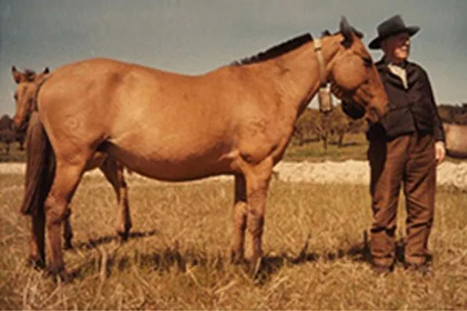

Assento I · 1920
O Encontro Histórico no Baixo Sorraia
A Revelação do Cavalo Primitivo Ibérico em Coruche
“…em 1920, andando à caça na região de Coruche, no baixo Sorraia, deparei com uma manada de indivíduos muito zebrados e com aspecto geral absolutamente selvagem…”
— Dr. Ruy D’Andrade (1920)
Durante uma jornada de caça nas várzeas e matas do baixo rio Sorraia, o Dr. Ruy d'Andrade avistou um grupo de equídeos cujas feições divergiam de todos os cavalos domésticos modernos. Apresentavam pelagens baia e rato, listra de mulo pronunciada, zebraduras nas patas e um porte arisco e indómito.
O zoólogo e paleontólogo compreendeu de imediato estar perante uma relíquia pré-histórica: os descendentes diretos dos cavalos selvagens que povoaram o sul da Península Ibérica desde o Paleolítico.
